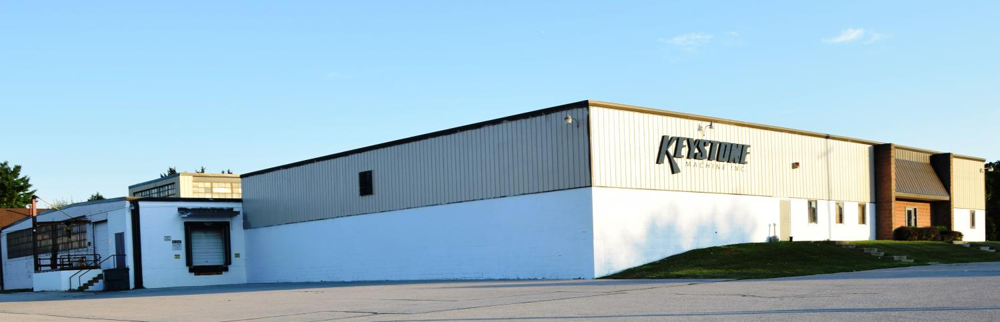

Production, coordinated.
SysPro, a state-of-the-art ERP system, controls inventories and manages production, purchasing, sales, accounting and cost control functions.
Keystone Machine, Inc.
Precision machining, contract manufacturing and assembly from South Central Pennsylvania.
Located in South Central Pennsylvania
Keystone Machine Inc. is a precision machining job shop and contract manufacturer, in business since 1987.
Our 27,000 square foot facility is in Littlestown, Pennsylvania, just over the Maryland line and centrally located between Westminster, MD and Gettysburg, PA.
The company employs 30 machinists, assemblers and overhead personnel. All are highly skilled and capable of accomplishing every job accurately and in a timely manner.
Keystone has successfully provided competitively priced, high precision machined components to customers globally in industries including power tools, aerospace, nuclear, military ordnance, earth moving equipment and pump manufacturing.
Electrical and mechanical assembly is another service we provide. Some assemblies are complex, with up to approximately one hundred parts, and require UL and CSA test board compliance and inspection at the manufacturing site.

Integrated systems / From order to machine
Keystone’s systems are highly integrated and up to date, supporting manufacturing, production management and engineering.
SysPro, a state-of-the-art ERP system, controls inventories and manages production, purchasing, sales, accounting and cost control functions.
Sales orders can be received via internet/email interface or fax. On-demand status reporting of work performed is available. Keystone supports same-day shipping for Kan Ban ordering programs.
The Engineering Department uses AutoCAD for design and MasterCam for CNC processing. All CNC programs are controlled and downloaded to machines by DNC.
Quality / Contract requirements
We are ISO 9001:2015 certified. We also understand AS9100 quality reporting and will perform PPAPs and SPC if required. Keystone has achieved “certified supplier” status with several customers.
When required by contract, we use DFARS compliant material and work within the rules and regulations of ITAR.
View our ISO certificateWell rounded machining capability utilizing state-of-the-art equipment and systems necessary to meet your most pressing demands.
Your next component starts here
Send your drawings to sales@keystonemachine.com.